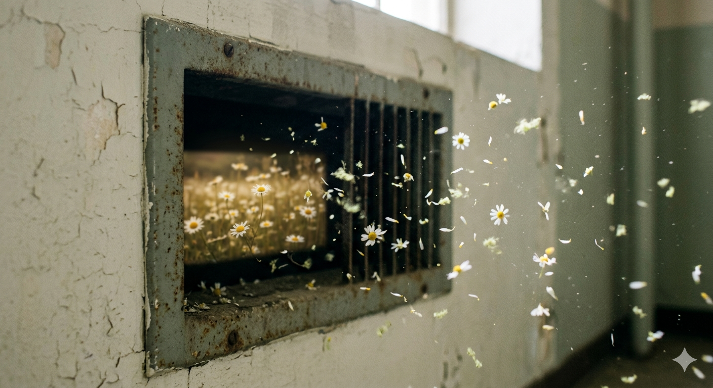

Essay
The Shoes We OutgrowOn moving on and moving forward, and the strange ache of realizing that growth rarely asks for permission before it changes you.
Sydney Holzman
Short stories, poems, food pieces, lifestyle writing, and essays shaped by attention, memory, and whatever lingers longest.

Sydney writes across forms, from personal essays and speeches to journalism, letters, and literary work, always returning to the same instinct: to pay close attention and give language to what lingers.
Morning Brew brings together Sydney’s essays, fiction, poems, food writing, and lifestyle pieces in one place.
Some pieces are personal. Some are reported. All of them are interested in detail, voice, and the things that stay with you.
Archive
Start wherever you want. The archive is organized so you can jump straight to poems, short stories, lifestyle writing, or food pieces, then keep scrolling through each section like a real archive instead of a mixed feed.
Featured
Essay
The Shoes We OutgrowOn moving on and moving forward, and the strange ache of realizing that growth rarely asks for permission before it changes you.
Short Stories

A short story about a man whose life revolves around death until love unsettles everything he thought he understood.
Poems

A poem of hunger, memory, and the body’s blurred edges.
A poem of inheritance, grief, and love carried forward on wings.
A sonnet for rarity, second homes, and joy made brighter by weather.
Lifestyle

A reflection on tradition, handwritten affection, and learning to love big without apology.

A piece about uncertainty, transition, and living in the middle of becoming.

A lively piece rooted in music, memory, and the unexpected things that stay with us.

A reflective lifestyle piece rooted in childhood, closeness, and the order we learn to take up space in.

A lifestyle piece about motion, restlessness, and the uneasy art of learning how to be still.

A piece about friendship, closeness, and the way love quietly alters who we become.
Food News

Tulane men keep proving romance is temporary, but a bad restaurant choice is forever.

A seasonal guide to sweets, discounts, and post-holiday scavenging.

A review-driven food piece from the tournament grounds.

A quick-hit lifestyle and food-news piece on the annual free cone event.

A fun look at snack gifting, baskets, and college ritual.

A TV-and-food crossover piece on what details signal an ending.

A profile piece centered on personality, baking, and public image.

A snack-search piece about curiosity, scarcity, and whether the hype paid off.
About
Sydney is a writer whose work lives in the details most people walk past. A senior at Tulane University and contributor to Spoon University and Hopelessly Yellow, she writes across forms: personal essays, speeches, journalism, letters, but the thread that runs through all of it is the same: an instinct to pay attention and give language to what lingers.
She collects the moments other people forget and turns them into something worth holding onto.
Whether she is writing for a crowd of thousands or an audience of one, her voice is warm, specific, and unmistakably hers.
“She collects the moments other people forget and turns them into something worth holding onto.”
Submit
If you have a subject Sydney should write toward, a memory worth revisiting, or a piece you want to share, send it here.
sydwin753@gmail.com